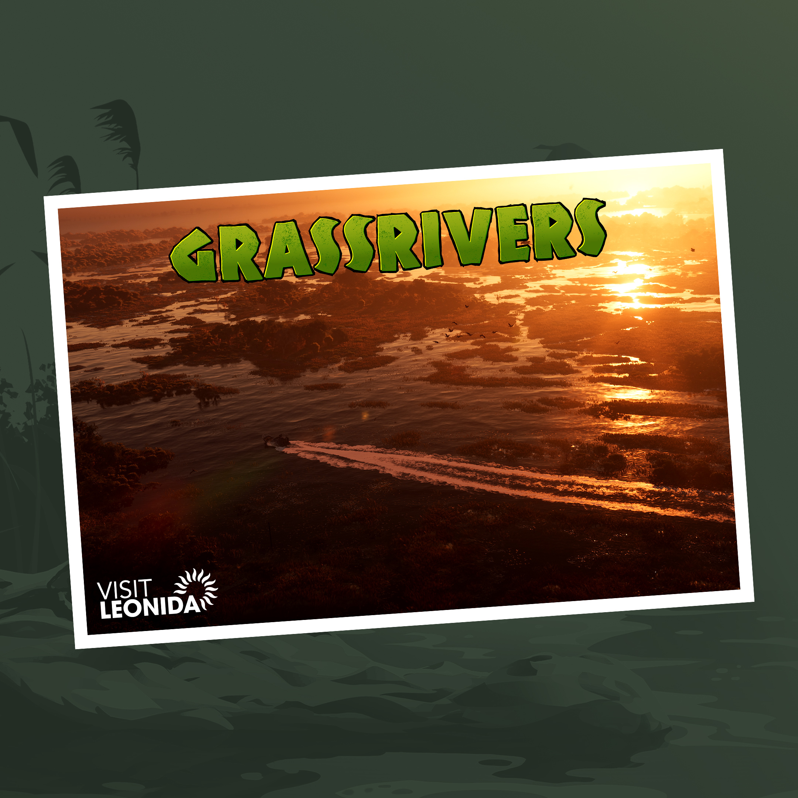

The glamour, hustle, and greed of America captured in a single city. From pastel art deco hotels to the bright white sands of Ocean Beach — Vice City has it all.
Leoninda Keys
A tropical archipelago where life is easy but the waters are deadly. Grab a drink and relax, but don’t drift too far from shore.

Grassrivers
Swamps filled with gators, secrets, and something far stranger. The deeper you go, the weirder it gets.
Port Gellhorn
Abandoned malls, cheap motels, and biker gangs — the new economy of this forgotten tourist town runs on chaos.
Ambrosia
A town built on sugar and sweat. The refinery fuels the locals, the bikers control the streets.
Mount Kalaga
A rugged wilderness where outlaws and mystics hide from civilization — and maybe something more sinister.